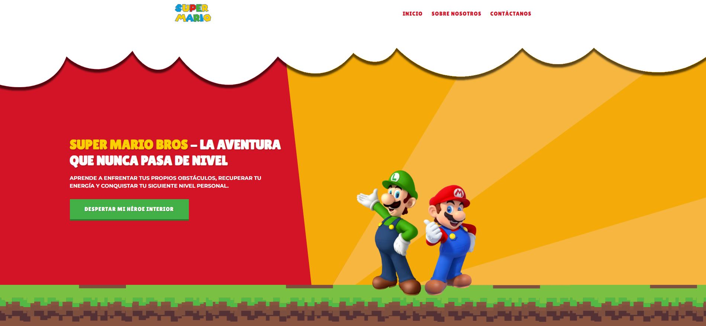

Sobre el Proyecto
Este proyecto se desarrolló con el fin de crear una landing page vibrante y llena de energía. Se utilizaron colores saturados y elementos para capturar la esencia de los juegos de Mario.
Características clave
- Animaciones divertidas y micro-interacciones.
- Paleta de colores inspirada en el videojuego original.
- Completamente responsivo para todas las pantallas.
Proceso de Desarrollo
Se prestó especial atención a la animación de los elementos para que el usuario sienta que está interactuando con un juego. Se utilizó CSS keyframes para las animaciones más complejas.